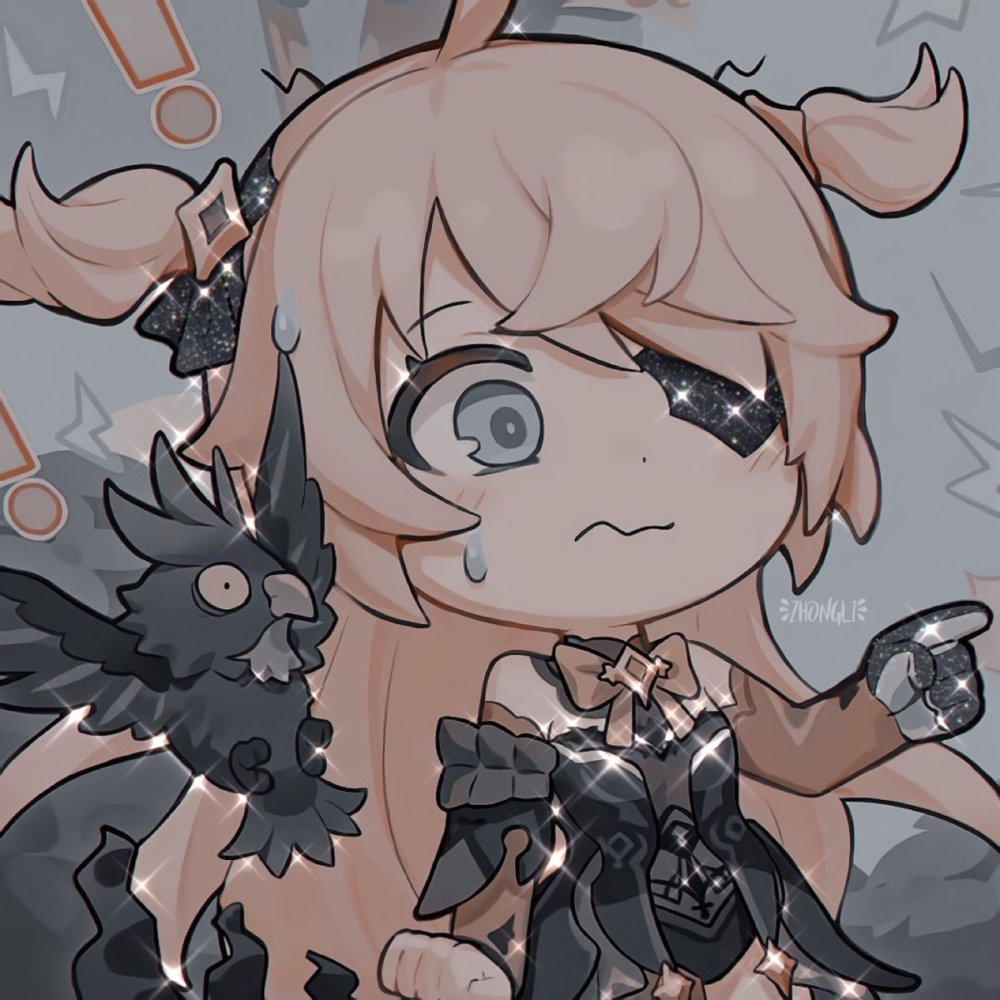

Fischl is a character in Genshin Impact. She is a four star electro character. She is an investigator for Mondstadt's Adventurers' Guild.
Fischl always travels with her raven, Oz

"A mysterious girl who calls herself "Prinzessin der Verurteilung" and travels with a night raven named Oz. Currently serves as an investigator in the Adventurers' Guild. Through her unique abilities, eccentric character, and (while she would never admit it herself) hard work, Fischl has become a rising star among the Adventurers' Guild's investigators, earning the recognition of all." -Description from the Official Website
